ok-kes 使用说明
本文介绍 ok-kes 的下载安装、界面操作、游戏设置，以及卡厄思模式和出击模式的配置方法。
下载安装
软件界面介绍
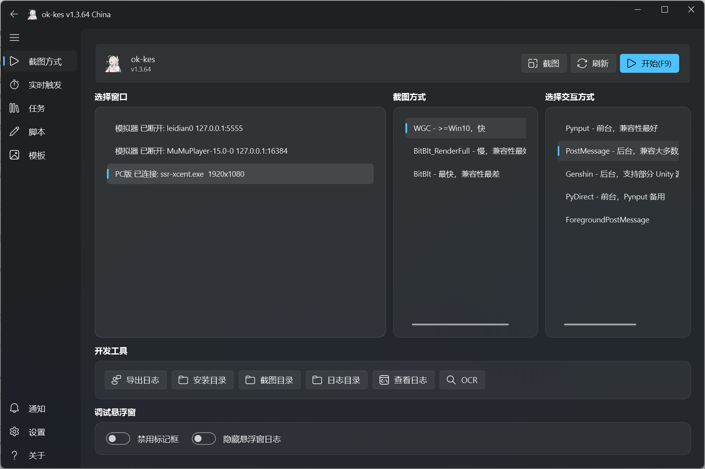
- 启动游戏并以窗口模式运行；在选择窗口区选择游戏窗口；交互方式选择 PostMessage，然后点击开始。
- 导出日志可以导出工具运行日志。如果遇到 Bug，请将日志导出后在 QQ 交流群中 @群主。
- 工具左下角设置内可以选择 OCR 后端。默认选择“自动”：内存大于等于 12 GB 时使用 OpenVINO，小于 12 GB 时使用 ONNX Runtime。OpenVINO 会占用更多内存，约 6～8 GB；ONNX Runtime 内存占用较小，约 1～2 GB，但 CPU 占用更高。
功能界面介绍
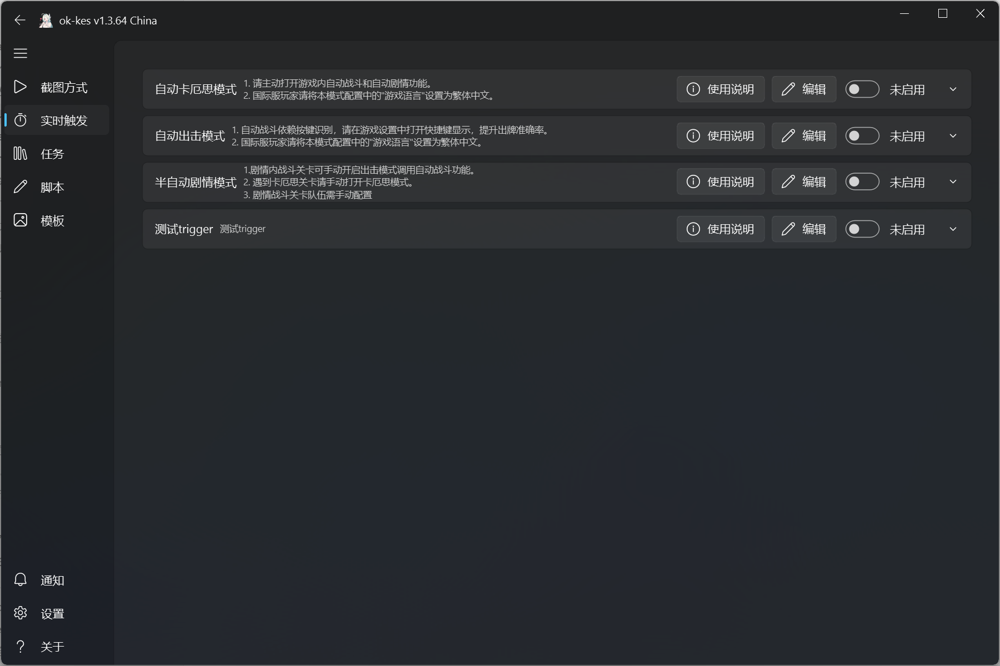
- 本工具包含三个功能：自动卡厄思模式（赛季卡厄思、零式系统、卡厄思具象）、自动出击模式和半自动剧情模式。
- 请分别进入对应模式的界面后再开启功能。可以在包含“进入”按钮的界面开启，也可以进入对应模式后开启。在游戏主页面开启功能将无效并自动关闭按钮，防止脚本意外点击。
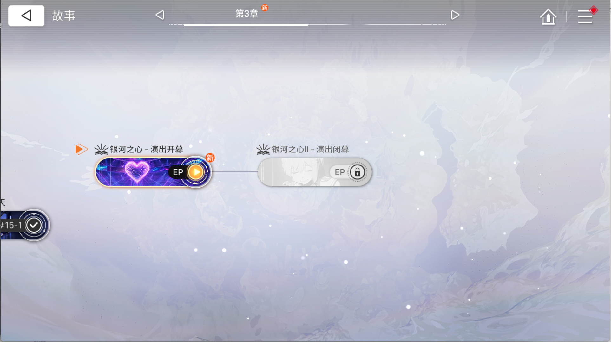
- 半自动剧情模式需要在上图所示的界面开启。遇到战斗关卡时，需要手动点击配队人选，否则会卡在选人界面（不必关闭功能）；遇到卡厄思关卡时，需要手动打开“自动卡厄思模式”。
游戏设置
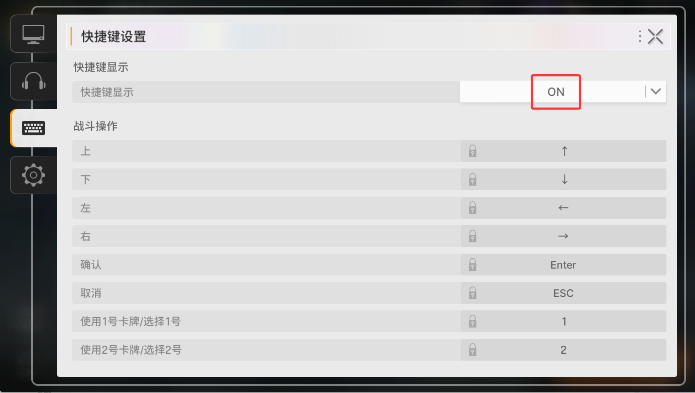
- PC 端出击模式的自动战斗依赖按键识别。请按照上图进入游戏设置，将快捷键显示设置为 ON，这会明显提高出牌准确率和战斗胜率。
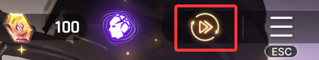
- 进入游戏后，在游戏内右上角手动开启自动对话。
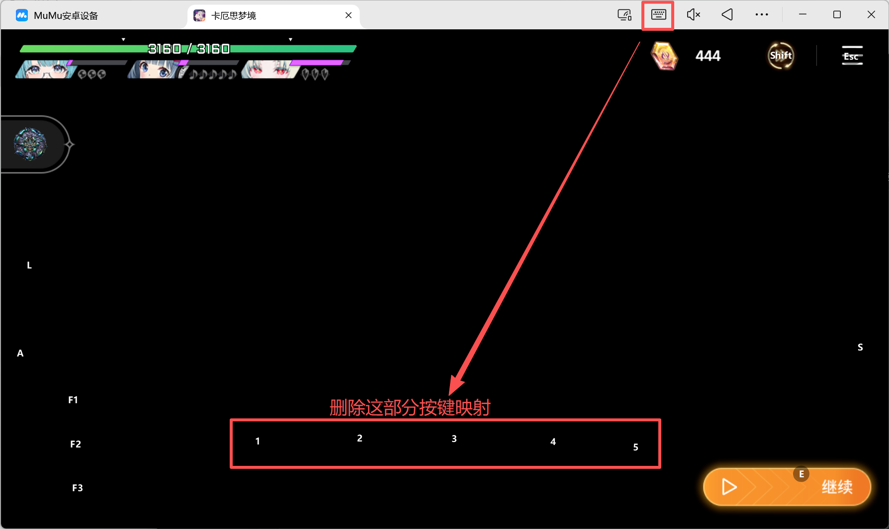
- 使用 MuMu 模拟器时，请手动删除手牌区的数字映射，如上图所示。
配置介绍
卡厄思模式配置介绍
!!! note "国服与国际服配置说明"
国服和国际服的翻译不同，不同战员的配置无法通用。国际服在修改对应国服配置时，无需将简体改成繁体（简繁均可）。例如，国服卡牌【剑雨】对应国际服卡牌【劍之雨】，填写国际服配置时可以写【劍之雨】或者【剑之雨】，但不能直接写【剑雨】。
- 配置操作：工具支持导入配置码、导出配置码、热门配置、保存配置和切换配置。热门配置由使用本工具的用户自动上传。如果不愿意上传任何信息，可以在工具设置内关闭上传功能；关闭后将无法使用热门配置功能。
- 游戏语言：国服对应简体中文，国际服对应繁体中文。
- 刷存档主战员：只能填写一名主战员。后续的装备分配、卡牌复制、闪光、移除等功能默认优先该主战员。卡厄思模式不支持自动选择配队，需要手动配队，填写的名字应为三名主战员之一。
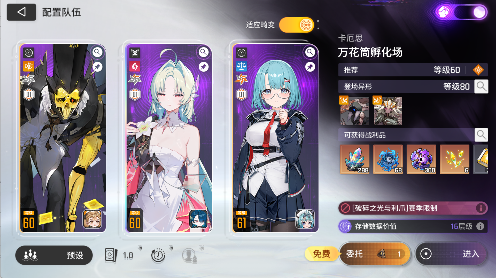
- 存储数据保存上限大于多少：对应下图的数据价值层级；如果不满足要求，会自动刷新。
| 赛季卡厄思 | 零式系统 |
|---|---|
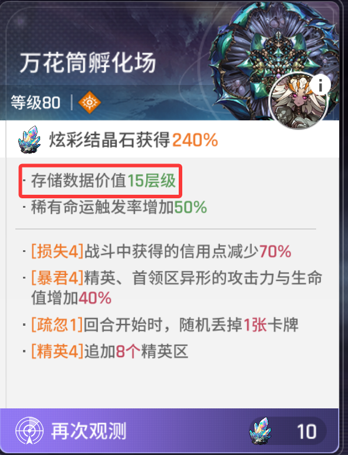 |
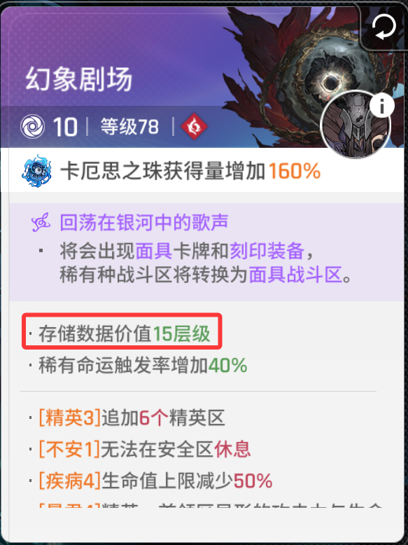 |
- 保留大于多少TB的存档：低于该配置值的存档会自动回收为金币。
- 领取奖励（只使用验证卡）：如果想使用体力领取奖励，需要手动将体力转为验证卡。验证卡不足时，会自动关闭该功能，然后继续刷卡厄思。
- 任务优先级：对应下图的选项卡内容。可以填写标题和内容中的任意部分字段，但所有字段必须符合原文顺序，标题和内容之间不要添加任何符号。填写关键字段即可；写得太完整，反而可能因为 OCR 漏识别文字而匹配不上。
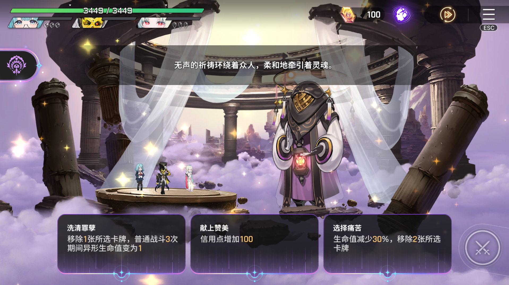
例如上图，如果仅配置【移除】，那么能匹配第一个和第三个选项。按照从左到右的优先顺序，会优先选择第一个选项。如果想优先选择第三个选项，可以配置成【“移除2张”，“移除”】。
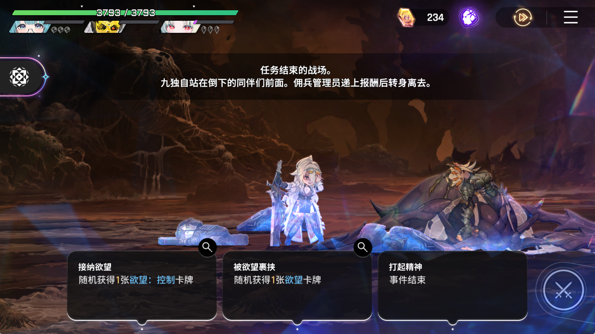
再举一个容易犯错的例子：如上图所示，如果配置【随机获得1张欲望卡牌】，那么会优先匹配第一个选项，而不是第二个选项。因为【随机获得1张欲望卡牌】是【随机获得1张欲望：控制卡牌】这段文字的子序列，所以第一个选项也算“命中”。如果想命中第二个选项，应该填写第一个选项中没有的文字。这时可以考虑加入标题，配置成【裹挟欲望卡牌】。其中“裹挟”是标题，“欲望卡牌”是描述，能够精准命中第二个选项。
- 拉黑任务：有些任务选项可能会无限重复，例如某些增加压力的事件；拉黑的选项不会被选择。
- 闪光优先级：配置卡牌发生闪光时的选择优先级。对应出现如下界面时，决定优先选择哪张卡牌。描述写成“卡牌名 + 卡牌描述”，不需要填写完整内容，只要字段能正确区分卡牌即可。写得太完整，反而可能因为 OCR 漏识别文字而匹配不上。建议不要填写符号，例如【剑雨伤害次数增加】已经能精准匹配第三张闪光。注意：当前文字识别容易漏掉“一”字，遇到时尽量不要填写，例如将“一缕光芒”写成“缕光芒”。
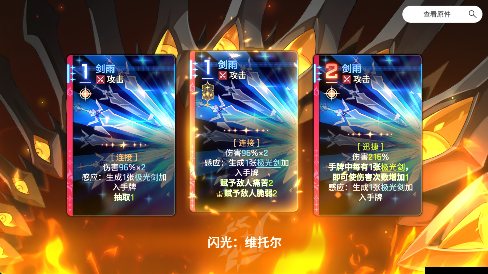
- 移除卡牌列表：在牌库中删牌时的优先级，建议填写完整卡牌名。
- 闪光卡牌列表：在牌库中选择卡牌闪光时的优先级，建议填写完整卡牌名。
- 复制卡牌列表：在牌库中选择卡牌复制时的优先级，建议填写完整卡牌名。
- 需要冥想的卡牌：填写需要通过冥想重新获取闪光的卡牌，建议填写完整卡牌名。当列表中的卡牌没有获得“闪光优先级”指定的闪光时，工具会记录该卡牌需要冥想，并在后续休息区尝试选择冥想。
- 多少信用点以上冥想：只有当前信用点同时大于该配置值和本次冥想费用时，才会选择冥想。如果休息和冥想都可以选择，当前生命值低于 50% 时优先休息，否则选择冥想。
- 商店刷新信用点阈值：德朗商店的免费刷新次数用完后，仅当信用点大于该值且足够支付本次刷新价格时，才会消耗信用点付费刷新。
- 装备1-3号位优先级：按照优先级列表替换装备。未配置的传说装备无法替换配置中的普通装备；配置中的普通装备会替换未配置的传说装备；遇到未配置的装备时，高品质装备会替换低品质装备。
- 卡牌奖励优先级：中立卡牌、欲望卡牌的优先级，例如梦之边境、装备包等。未配置的中立卡牌会跳过选择。
- 首层刷特定闪光：默认刷“闪光优先级”中的第一张，可刷神闪；第一层没有刷出时会自动逃脱并重新刷。例如想刷小丑“恶魔骰子”的减一费神闪，可以将“闪光优先级”的第一个配置为【恶魔骰子此卡费用减少】。
- 刷空档：用于给某个战员刷空档，参考配置见娜迦空档配置。开启此功能时，请保证“刷初始卡牌”配置为空。
- 优先使用金币治疗：开启后使用金币治疗崩溃角色；关闭后会优先使用旅行券治疗。
- 治疗崩溃：角色崩溃后是否前往创伤中心治疗。
- 优先移除基础牌：如果“移除卡牌列表”中的卡牌都删完了，会优先删除主战员的基础牌；否则会跳过删牌。
- 进入商店：是否进入商店删牌、购买商品。
- 指定面具卡牌：用于幻想剧场地图中的面具卡牌选择。填写时不需要完整卡牌描述，只需填写能区分不同卡牌的关键字段。
- 面具卡牌刻印：选择面具卡牌的刻印。填写想刷的刻印的部分描述即可，目前仅支持刷一种刻印。
- 刷初始卡牌：配置卡牌名字后，会在进入卡厄思的第一个事件中反复刷新“传说卡牌3选1”选项，直到刷到配置的卡牌，例如“梦之边境”。
- 只打第一层：刷材料时可以开启，提高刷卡厄思材料的效率。
- 路线优先级：一般不需要修改。工具会根据配置顺序选择事件最多或休息最多的路线；如果主要刷材料，也可以自行调整，例如将精英节点提前。
- 几轮后停止（0为不停止）：设置刷几轮卡厄思。
- 第几层boss前自动暂停：在 Boss 前自动暂停，一般用不到。
出击模式配置介绍
- 配置操作：工具支持导入配置码、导出配置码、热门配置、保存配置和切换配置。热门配置由使用本工具的用户自动上传。如果不愿意上传任何信息，可以在工具设置内关闭上传功能；关闭后将无法使用热门配置功能。
- 游戏语言：国服对应简体中文，国际服对应繁体中文。
- 出战主战员优先级：选择由谁带队出击。一般只填写一名主战员，但由于 OCR 可能不准确，也可以填写多个名字。例如，“九”可能被识别成“力”，配置时可以填写【“九”，“力”】。
- 战员优先级：队友的优先级，可以填写多个；采用严格匹配，请填写完整名字。
- 领取奖励：开启后会自动消耗脑子领取出击奖励；脑子消耗完后，会自动消耗体力领取奖励；体力消耗完后，会自动关闭按钮并继续刷出击模式。
- 出牌优先级：自动战斗的出牌优先级。
- 获得卡牌优先级：战斗后获卡事件中的卡牌选择优先级。如果没有命中配置中的卡牌，会跳过选择。
- 移除卡牌列表：在牌库中删牌时的优先级，建议填写完整卡牌名。
- 闪光卡牌列表：在牌库中选择卡牌闪光时的优先级，建议填写完整卡牌名。
- 复制卡牌列表：在牌库中选择卡牌复制时的优先级，建议填写完整卡牌名。
- 装备1-3号位优先级：按照优先级列表替换装备。未配置的传说装备无法替换配置中的普通装备；配置中的普通装备会替换未配置的传说装备；遇到未配置的装备时，高品质装备会替换低品质装备。
- 只打第一层：默认开启，打完第一层 Boss、领取奖励后自动逃脱。
- 进入商店：是否进入商店删牌、购买商品。
- 商店刷新信用点阈值：德朗商店的免费刷新次数用完后，仅当信用点大于该值且足够支付本次刷新价格时，才会消耗信用点付费刷新。
- 优先移除基础牌：如果“移除卡牌列表”中的卡牌都删完了，会优先删除主战员的基础牌；否则会跳过删牌。
- 几轮后停止（0为不停止）：设置刷几轮出击。
- 卡牌奖励优先级：遇到中立卡牌选择事件时的优先级；没有命中则跳过。
- 丢弃卡牌优先级：战斗中触发弃牌事件时的优先级，例如慢板等。
- 任务优先级：事件选项优先级。可以填写标题和内容中的任意部分字段，但所有字段必须符合原文顺序，标题和内容之间不要添加符号。填写关键字段即可；写得太完整，反而可能因为 OCR 漏识别文字而匹配不上。
- 拉黑任务：出击模式对胜率要求较高，一般会拉黑“咒术卡牌”“压力增加”等选项。
- 拉黑主战员：需要拉黑的队友。由于适配问题，可能存在部分战员的卡牌功能未适配，或者部分队友失败率较高，可以选择拉黑。
- 生命值大于多少优先闪光（百分比）：休息区可以选择闪光或休息，工具会根据血量百分比调整选择。
- 路线优先级：一般不需要修改，工具会自动规划最优路线。
- 第几层boss前自动暂停：一般用不到。可以在 Boss 前暂停并手动接管，以提高 Boss 战胜率。
工具社区
本工具的官方社区为 QQ 频道，也可以通过频道号 pd66522118 搜索，或者使用 QQ 扫描下方二维码。QQ 频道会发布工具更新消息，用户也可以分享卡厄思模式和出击模式配置。
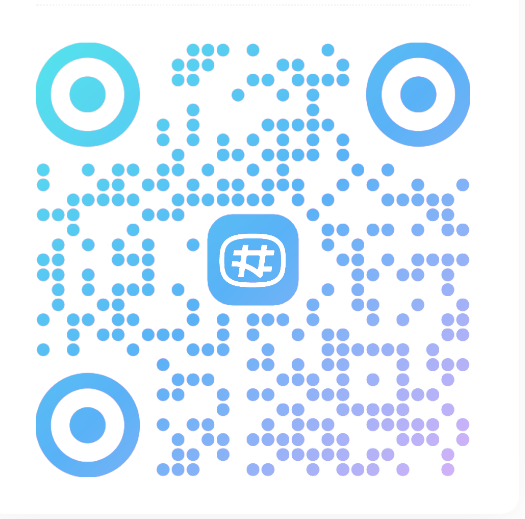
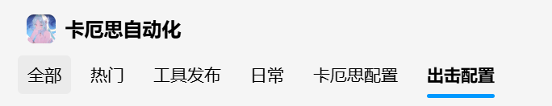
导入社区配置码
例如下图中的帖子：展开帖子并复制完整配置码，点击对应模式的“导入配置码”。弹出的对话框会自动填充最近复制到剪贴板的内容，点击 OK 即可导入对应配置。
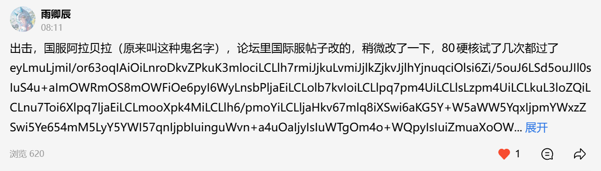
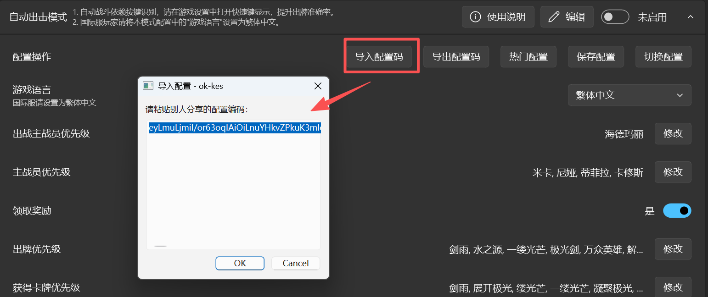
频道鼓励用户发布自己的配置、讨论游戏日常，并向工具提出建议。
在 GitHub 查看源文件 ↗ · 页面生成时间: 2026年11月4日
 在 GitHub 查看源文件 ↗
在 GitHub 查看源文件 ↗